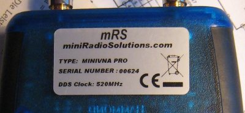

Here the technical minimum and maximum values are displayed for the transmission- and return-loss.
Here the technical minimum and maximum values are displayed for the phase.
If the analyzer is connected and configured to the correct communication port, the version of the internal firmware is displayed. Else an error message is shown.
If the analyzer is connected and configured to the correct communication port, the currently voltage of the internal battery is displayed.
Determine the number of steps used during creation of calibration data. A value of 2.000 gives for most of the use cases good results. The resolution of one calibration step is the scanrange 100kHz to 200MHz divided by 2.000.
Increasing this number results in a smaller frequency range per calibration point. Increasing the number of calibration points only slows down the calibration data creation, not the regular scans.
The value entered here depends on the analyzers internal DDS clock frequency. Only a very little number of analysers have a 500MHz DDS. All later analyszers have a 520MHz DDS. The DDS frequency is usually on the backside label of the analyzer.

for a fine frequency calibration please use the frequency calibration function in vna/J.
Since version 2.3 of the miniVNApro firmware, the analyser supports any scan widths. Prior to this version, the scan widths must me a multiple of 100. If your analyser has a firmware >= 2.3 (see info in Firmware info field) check the ">=2.3" checkbox.
Since version 2.3 of the miniVNApro firmware, it is also possible to reduce the generator power by 6dB in transmission mode, to overcome the problem with little bit too high generator power. This will reduce the dynamic range in transmission mode by 6dB to abt. 84dB. If the box "Fixed 6dB" is checked, the generator power is reduced by 6dB. The calibration files must be regenerated and should not be mixed with regular calibration files.
The time in milliseconds between the open request to the interface and the response from the interface. If this time is exceeded, an error is thrown. Should be usually not changed!
The time in milliseconds between the commands send to the analyzer. Should be usually not changed!
The time in milliseconds between the command request to the analyzer and the response from the analyzer. If this time is exceeded, an error is thrown. Should be usually not changed!
The baudrate used to communicate with the analzer. Should be usually not changed!
All internal calculations are done using the entered reference resistance. It can be a complex value with real and imaginary parts. Usually only 50+i0 is entered.